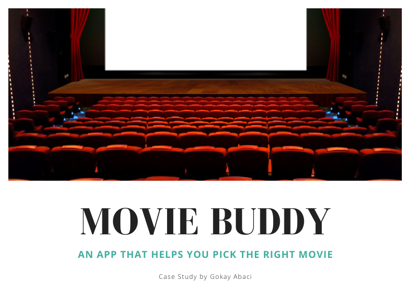
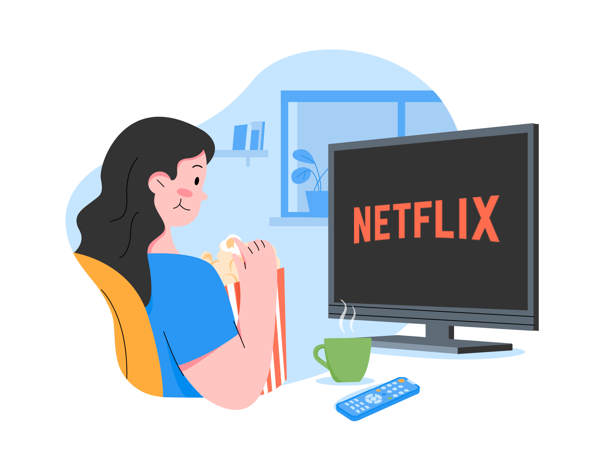
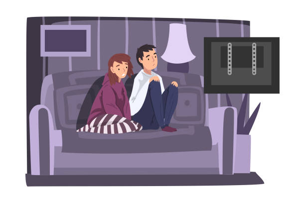
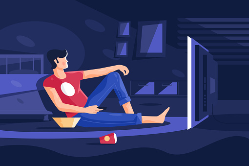
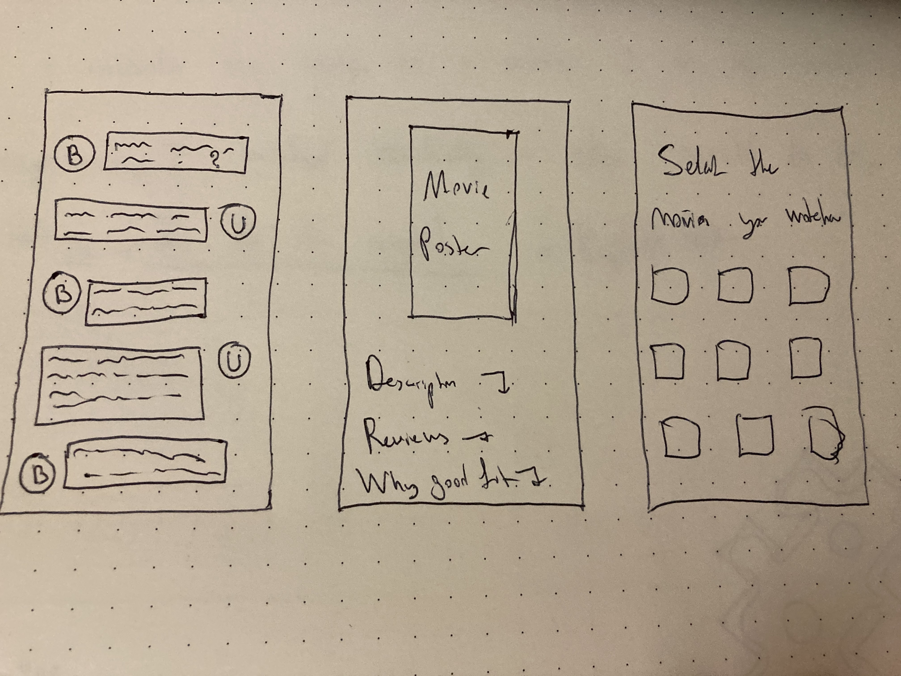
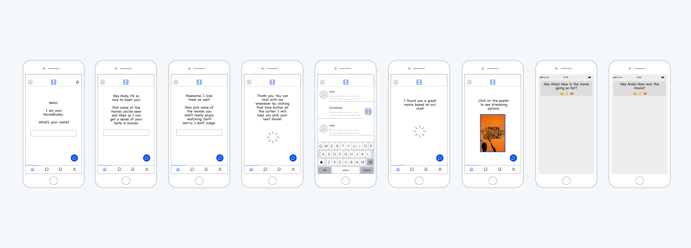
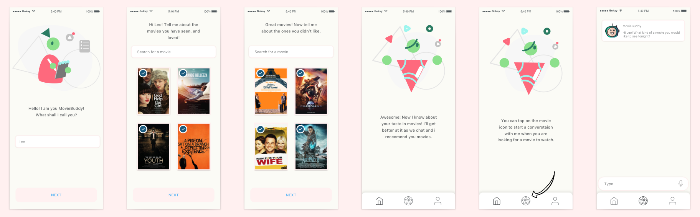
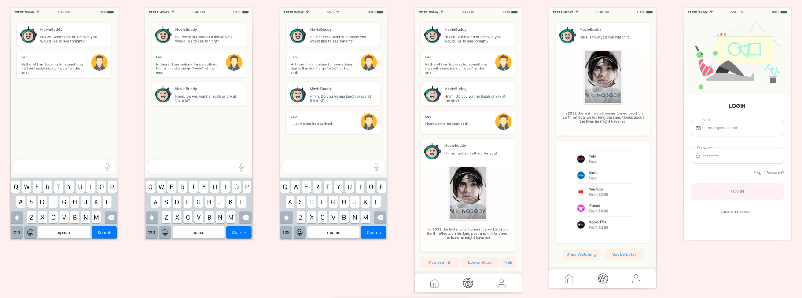
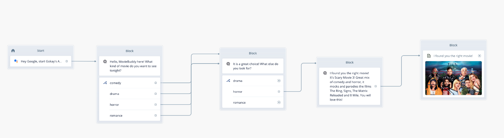

MovieBuddy is your bot friend who finds you the perfect movie you've been searching for!
Target Users

People who are trying to find the right movie to watch based on their interests and moods at a certain time.
Problem Statement

Currently, it is rather difficult to find a movie to watch when you are looking for a specific genre, with a specific topic, and with a specific storyline that you would enjoy at the time.
User Journey and Pain Points

You are staring at a screen, switching between Netflix, Hulu, Prime Video, Showtime..but nothing seems good to you, you simply can’t find a movie you think you want to watch. It’s there, somewhere.. You wish someone would just listen to you telling them what you are actually looking for in a movie, and they would recommend you one right away. Well, it isn’t an option, or there is no perfect solution out there, and that’s the pain point.
Concept and Sketches

I thought of an app with a chatbot that would have a casual conversation with you about your interests in movies, and offer you recommendations based on what you are looking for. Even better, it would check in with you during, and after the movie, and take notes of your feedback on a movie it just recommended to you, and update his settings based on these feedbacks to get you the perfect movie next time.
Wireframes

Hi-Fi User Interface

User Testing and Feedback
Once I finished working on the prototype, I invited my friend to a zoom meeting to test the prototype and share their feedback.

There were 4 participants in total, and I met them induvudualy over the course of 4 days. I share the prototype link with them and asked them to share their screens. I asked them to interact with it, and took notes as they played with the prototype.
Feedback
*The onboarding felt natural
*People expected the movie to start playing on the app itself
*All thought the colors were pleasant to look at.
*They clicked on the mic icon, but them icon wasn't part of the prototype asn the voice part wasn't designed yet.
*They wanted a feature where they could access the movies they watched and the ratings they gave to them.
*Overall, I received positive reviews and everyone said they would use an app like this if it was a real thing.
Improvements
*I added a bookkeeper feature where it records the movies the user watched, and how they rated them.
*I also worked on the voice prototype, and created this interaction on VoiceFlow, which is designed to be non-technical for those who don’t know how to code. For example, its two basic block types are “speak” and “choice.” Its blocks are organized on the screen through drag-and-drop, as users design the flow of their app. For more technical users, an advanced section allows you to add logic and variables, but it’s still entirely visual. Take a look at the next prototype video to see how it works for MovieBuddy.

Voice Prototype
Reflections and Next Steps
I loved working on this project. I believe many people have difficulties trying to find a good movie to watch when they feel uncertain. Often they end up watching something they will never want to see again. I think MovieBuddy can help us to find movies we would like to see based on the conversation we have with it, and also our past movie ratings. By allowing to rate the movie in the middle of it, and at the end if it, the app helps us to become more mindful about our media consumption.
The next step is to do many more user testings, iterate, and iterate again on our initial design until we get to something our users love using and recommend it to their friends.
Credits
Concept, UI and UX design: Gokay Abaci
Illustations: DrawKit.io
Program: Sketch, VoiceFlow